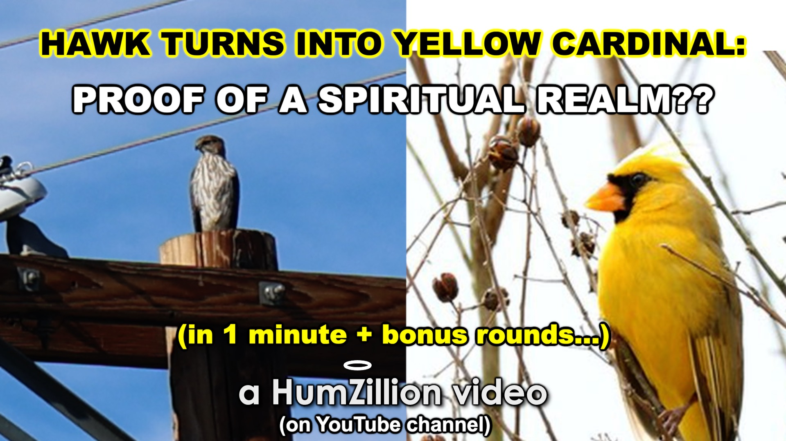
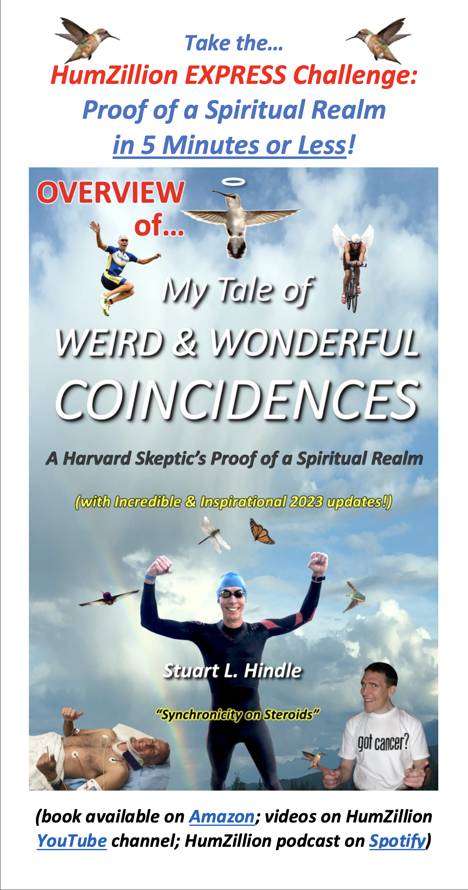
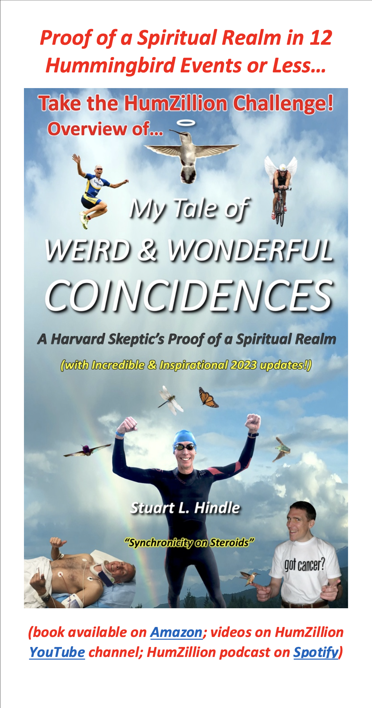
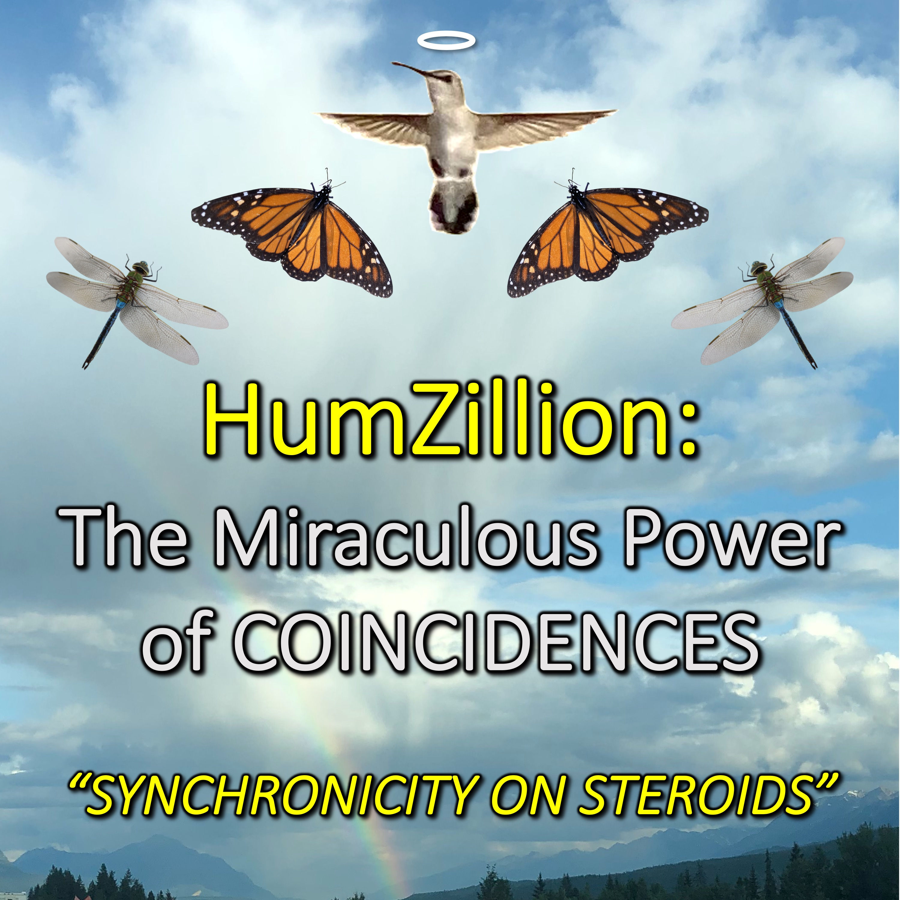
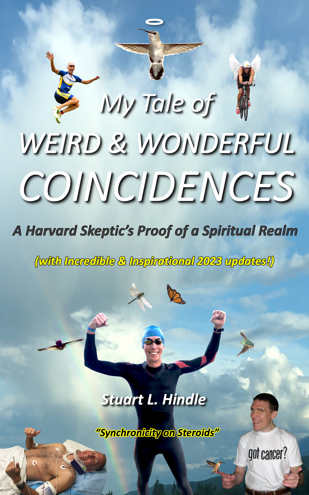

It’s a Magical World, not Magical Thinking…
WATCH one or more of the videos on the new HumZillion YouTube Channel
- HumZillion Preview (3.5 min)
- Mom Prearranged Signs – Inspirational Proof of Afterlife (9 min)
- Hawk Turns into Yellow Cardinal + Other Narrated Events (20 min) 


[Please subscribe/check back for new content. Future plans for Instagram/TikTok.]
TAKE a HumZillion Challenge (print + audio formats of 5 to 40 min lengths)
READ (online/downloadable PDF links)
HumZillion Express Challenge: Proof in 5 Minutes or Less
HumZillion Challenge: Proof in 12 Hummingbird Events or Less (40 min)
LISTEN (stream/downloadable audio links - multitask!)
HumZillion Challenge: Proof in 12 Hummingbird Events or Less (40 min)
[Note: The 40-min print/audio HumZillion Challenge selections are an efficient way to read/hear more comprehensive highlights of my story as a proxy for what is covered in my book.]
READ my book on Amazon (700-pages, available in paperback and e-book)
Filled with dozens of incredible, inspirational stories, plus hundreds of photos providing further proof
